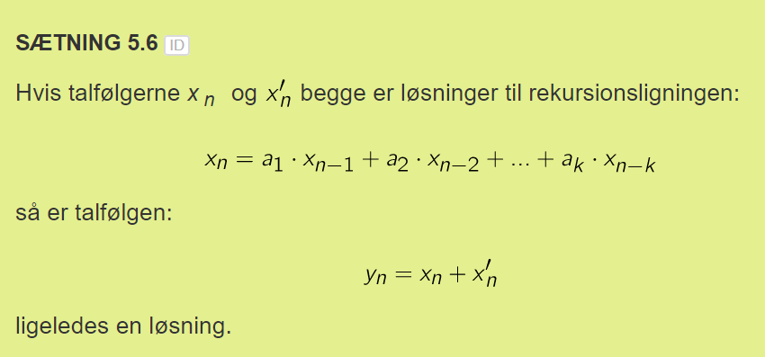
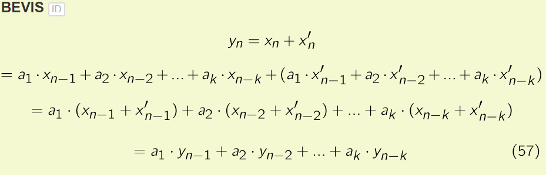
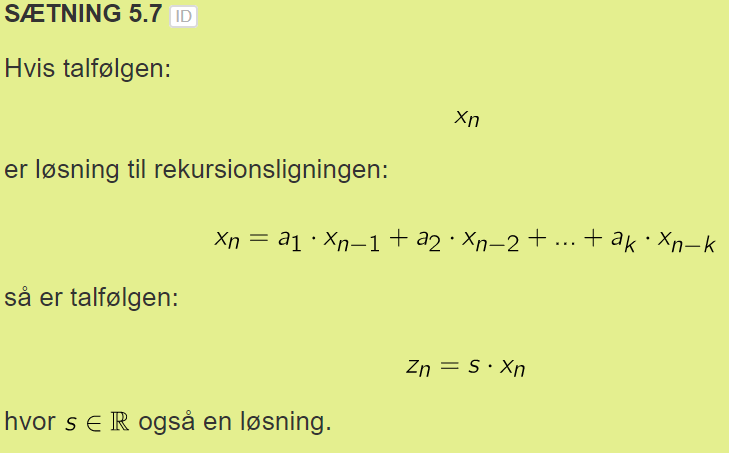
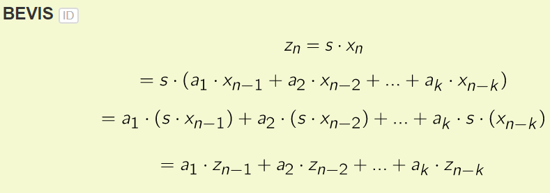
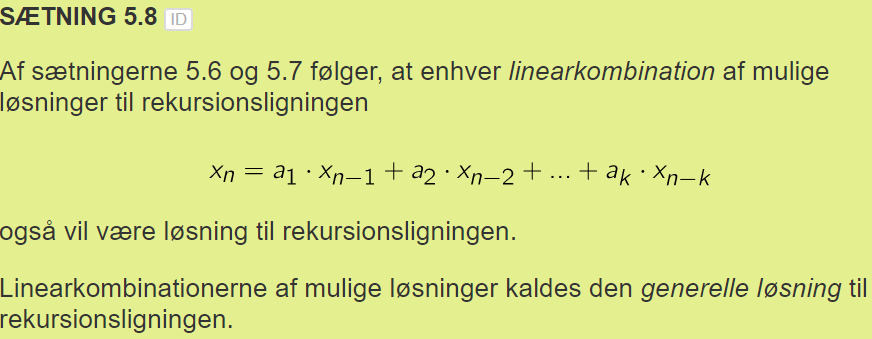

Ligninger
- x_(n+1) = f(n, x_n)
Begyndelsesbetingelse:
- x_0 = a, a er et reelt tal
Tælletal
- tænk på det som index
Generelle Løsninger
- 
- 
- 
- 
- 
Ligning (generel)
- x_n = f(x_0, n)
Talfølge (parktikulær)
- kræver begyndelsesbetingelse
- angive talfølgen
- x_n = 1,2,3...
Typer
homogen lineær
En homogen lineær rekursionligning af k'te orden
Begyndelsesbetingelse
inhomogen

Løsninger
Partikulær
- y_n = 1,2,3,4,5..., ud fra begyndelsesbetingelse.
Generel (ligning som løsning)
- z_n = f(n)
Y_n = a*y_(n_1)
- Y_n = y_0 * a^n
Lineær rekursionsligning
Homogen
Løsning
Y_n = alpha * {a} + beta * {b} …
Inhomogen